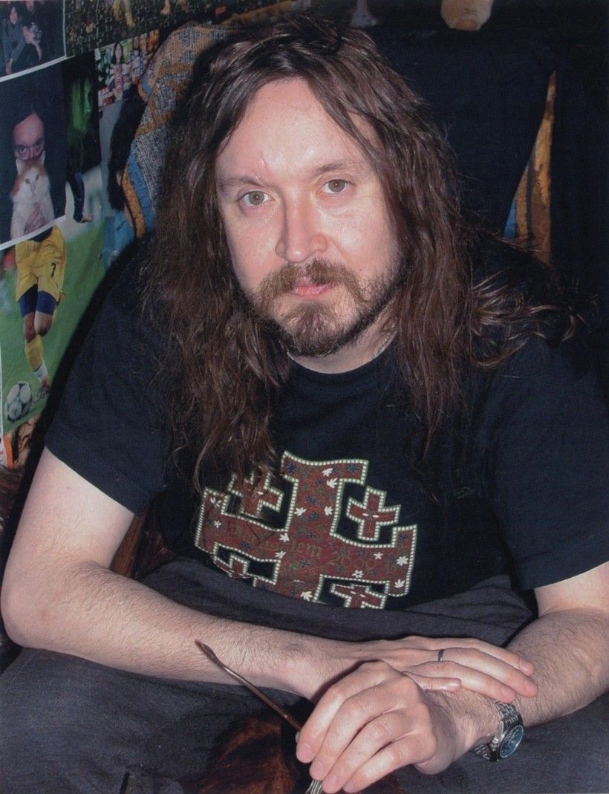
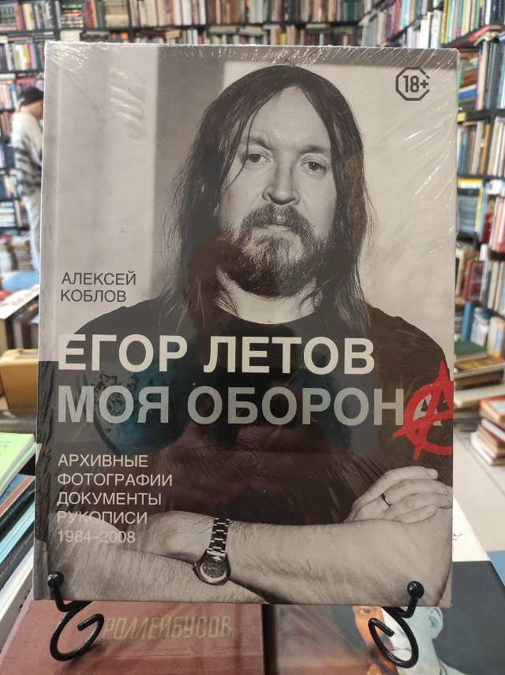
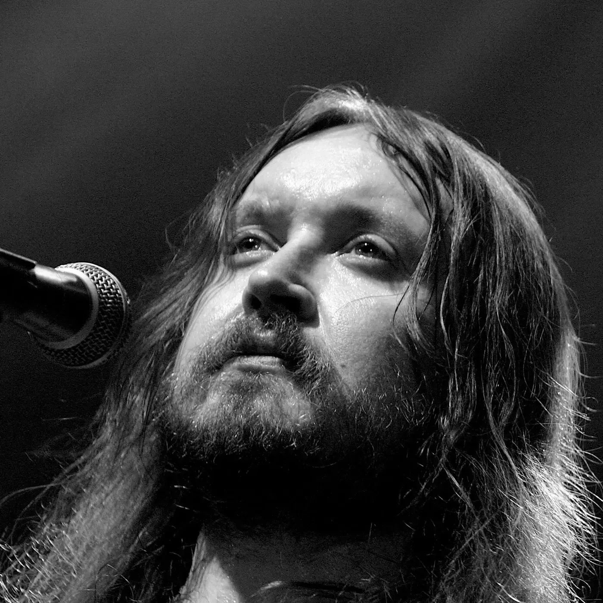

Егор Летов
Сквозь дыру в моей голове
Психоделический рок, который изменил звук целой страны. Архив, философия, дискография.
1964 — 2008
Егор Летов
Игорь Фёдорович Летов — основатель и бессменный лидер Гражданской Обороны. Из омского подполья 80-х он вынес музыку, в которой ярость и нежность звучат одним голосом.
ГрОб стал не просто группой, а языком поколения: самиздат, магнитофонные копии, концерты без декораций — только правда звука.
Читать философию →
Тур 40-летия
Концерты в честь Гражданской Обороны
- Москва Stadium Live Купить билет
- Санкт-Петербург A2 Green Concert Купить билет
- Екатеринбург Tele-Club Купить билет
- Новосибирск Победа Купить билет
- Омск Концертный зал Купить билет
- Красноярск Grand Hall Siberia Купить билет
Биография
Егор Летов.
Моя Оборона
Архивные фотографии, документы и рукописи 1984–2008. Сборник, собранный из того, что обычно остаётся за кадром.
1500 ₽
Купить

Скоропостижно скончался в Омске 19 февраля 2008 года в 16:57 по местному времени на 44-м году жизни. По первоначальной версии, причиной смерти стала остановка сердца, хотя позже появилась другая версия: острая дыхательная недостаточность, развившаяся от отравления алкоголем. На сайте «Гражданской обороны» было указано, что Летов умер от остановки сердца. Похоронен в Омске на Старо-Восточном кладбище, рядом с могилой матери.